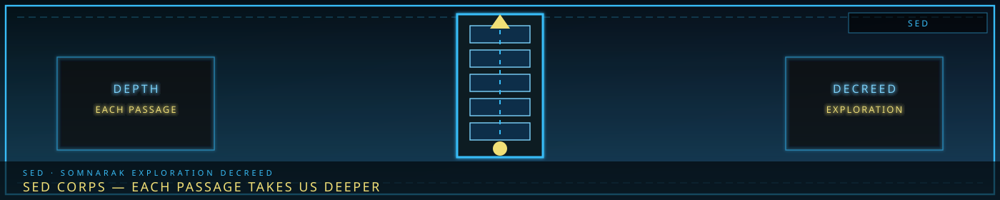

/// RAPID JUMP:
STATUS: ARCHIVE VERIFIED |
CLEARANCE: LEVEL-4 OVERSIGHT |
PROTOCOL: REVERIE DIRECTORATE
ARTICLE
DISCUSSION
SOURCE
HISTORY
YEAR 4,238 · DAWN OF HOPE
FACTIONS RECORD
Somnarak Exploration Decreed (SED)
Contents
- The Premise
- The Structure
- The Cast (SED Team)
- ARC Structure Overview
- The Story Structure — Passages (통로 — Tongno)
- Arc 1: The Undercity (지하도시 — Jihadoshi)
- Arc 2: The Forgotten Districts (잊혀진 구역 — Ithyeojin Guyeok)
- Arc 3: The Hidden Routes (숨겨진 경로 — Sumgyeojin Gyeongro)
- Arc 4: The Deep Gardens (깊은 정원 — Gippeun Jeongwon)
- Arc 5: The Border Tunnels (경계 터널 — Gyeonggye Teoneol)
- Arc 6: The Scar (흉터 — Pyukneo)
- Arc 7: The Source (근원 — Geunwon)
“Each passage takes us deeper. Each depth reveals a truth. Each truth changes us.”

Overview
"Each passage takes us deeper. Each depth reveals a truth. Each truth changes us."
Story Structure: The SED's story is told in Passages — each one a journey deeper into the city's secrets.
"The city is 4,200 years old. We have mapped every street. We have catalogued every building. And yet — we know almost nothing about what lives beneath our feet, behind our walls, inside our sorrow."
Abbreviation: SED
What it is: An official decree by the Council of Sighs — authorizing organized exploration of Somnarak's unmapped, unknown, and dangerous areas. The city is vast. Its history is deep. Its sorrow is layered. Much remains undiscovered.
Why it exists:
- The city is 4,200 years old — but only the surface has been mapped
- Beneath the streets lie ancient structures, sealed chambers, and forgotten districts
- Within the walls live Sorrow Entities that have never been catalogued
- The Desolate holds secrets the city has never confronted
- The Exile's warning — "Something is making the sorrow" — demands investigation
Who runs it: The SED is a joint operation — funded by the Council, staffed by the R.D., enforced by the Wardens, guided by the Weavers.
The Premise
"We thought we knew our city. We were wrong."
Somnarak is 86 km². 1.29 billion people. 5 zones. 12+ districts. But the city is layered — literally and figuratively. Beneath the streets lie:
- Ancient structures from before the Consolihan
- Sealed chambers that no one has opened in centuries
- Forgotten districts that were consumed by Han and never reclaimed
- Hidden passages between zones — used by Frays, Menders, and things worse
- The Undercity — a network of tunnels, vaults, and spaces beneath the city's surface
The SED's mission: Explore. Document. Understand. Survive.
The Structure
Exploration Teams
Each SED team consists of:
| Role | Source | Function |
|---|---|---|
| Team Lead | R.D. or Menders | Navigation, decision-making, survival |
| Architect | Architects | Structural assessment, Han-shaping, construction |
| Warden | Wardens | Security, defense, containment support |
| Weaver | Weavers | Dream perception, entity communication, subconscious navigation |
| Keeper | Keepers | Documentation, memory preservation, historical context |
| Collector | Collectors | Debt assessment, Echo harvesting, resource management |
Team size: 6-8 members
Equipment:
- Standard M.A.W. (team-issued)
- Sorrow Gauges (portable)
- Echo-Phones (for communication)
- Han-Suppression Gear (Warden-issued)
- Memory Readers (for documentation)
- Dream Chambers (portable, for emergency Dream-diving)
The Exploration Zones
75% of exploration is inside Somnarak. The remaining 25% is the Desolate.
| Zone | Exploration Focus | Status |
|---|---|---|
| Zone A — Depths | Beneath the Alpha Tree — what lies below the R.D.? | Partially explored |
| Zone B — The Undercity | Ancient tunnels, sealed chambers, the Maw's roots | Poorly explored |
| Zone B — The Forgotten Districts | Areas consumed by Han, never reclaimed | Unexplored |
| Zone C — The Hidden Passages | Secret routes between zones — used by Frays | Partially mapped |
| Zone D — The Deep Gardens | Beneath the Echo Gardens — what grows in the dark? | Unexplored |
| Zone E — The Border Tunnels | Passages beneath the Perimeter — where do they lead? | Poorly explored |
| The Desolate — The Scar | The Occlusihan rift — what lies inside? | Partially explored |
| The Desolate — The Source | Where Outside Sorrow originates — the Exile's discovery | Unexplored |
The Cast (SED Team)
Like the old exploration company's 12 Sinners, the SED has a core team — each with their own sorrow, their own story, their own arc.
Structure: 7 core members + rotating specialists
| # | Codename | Role | Sorrow | Arc |
|---|---|---|---|---|
| 1 | The Cartographer | Team Lead | Lost their home to a Han eruption — now maps everything obsessively | Learning to accept that some things cannot be mapped |
| 2 | The Mason | Architect | Built a wall that trapped their family during a breach — the wall still stands | Learning to build without fear |
| 3 | The Sentinel | Warden | Failed to protect their squad from a Sorrow Entity — sole survivor | Learning to protect without dying |
| 4 | The Dreamer | Weaver | Lost in the Dream for years — returned changed, sees things others can't | Learning to distinguish Dream from reality |
| 5 | The Archivist | Keeper | Found a memory that should not exist — now hunted by those who want it erased | Learning when to preserve and when to forget |
| 6 | The Accountant | Collector | Calculated a debt so large it broke the system — now the system wants them silenced | Learning that some debts cannot be paid |
| 7 | The Silent One | Specialist | Does not speak. Does not explain. Carries a secret that could change everything. | Learning to trust others with the truth |
ARC Structure Overview
- Arc 1: The Undercity (Zone B)
- Passage 1: Descent — Team enters the Undercity, finds the hidden passage
- Passage 2: The First Chamber — Sealed room, the diary, the crystallized person
- Passage 3: The Hunger — Walls move, entity appears, team fights
- Passage 4: The First Fight — Guardian Entity battle, team is outmatched
- Passage 5: The Story — Entity tells its story through feeling
- Passage 6: Return — Team surfaces, requests better equipment
- Arc 2: The Forgotten Districts (Zone B)
- Passage 1: The Mason's Wall — Doha confronts the wall he built
- Passage 2: The Hidden Settlement — People living in Han-consumed areas
- Passage 3: The Hollow Residents — Who are they? Why did they stay?
- Passage 4: The Breaking Point — Combat with forgotten entities
- Passage 5: The Choice — Tear down the wall, or leave it standing
- Passage 6: Return — Doha's transformation
- Arc 3: The Hidden Routes (Zone C)
- Passage 1: The Fray Network — Mapping the criminal underground
- Passage 2: The Ancient Tunnels — Predating the city itself
- Passage 3: The Sentinel's Failure — Harin confronts her past
- Passage 4: The Ambush — Frays, rogue entities, traps
- Passage 5: The Connection — Where do the tunnels lead?
- Passage 6: Return — Harin's redemption
- Arc 4: The Deep Gardens (Zone D)
- Passage 1: Beneath the Flowers — What grows in the dark?
- Passage 2: The Gateway — The Echo Gardens are more than a memorial
- Passage 3: The Dream Bleeds — Sora's perception becomes dangerous
- Passage 4: The Garden Guardians — Dream entities protect the gateway
- Passage 5: The Other Side — What lies beyond the gateway?
- Passage 6: Return — Sora accepts her gift
- Arc 5: The Border Tunnels (Zone E)
- Passage 1: Beneath the Wall — Tunnels under the Perimeter
- Passage 2: The Forgotten Memory — Minjae's forbidden truth surfaces
- Passage 3: Outside Sorrow — The Desolate seeps in
- Passage 4: The Wardens' Secret — What the Wardens hide beneath Zone E
- Passage 5: The Passage — Where do the tunnels lead?
- Passage 6: Return — Minjae's burden grows
- Arc 6: The Desolate — The Scar
- Passage 1: Beyond the City — Entering the Desolate for the first time
- Passage 2: The Occlusihan Rift — The Scar's history
- Passage 3: The Scar Walker — Confronting the guardian
- Passage 4: The Wrath Flame — The rage of six factions
- Passage 5: The Door — The Scar is not just a wound
- Passage 6: Return — Jisoo's debt calculation
- Arc 7: The Desolate — The Source
- Passage 1: The Journey — Finding the source of Outside Sorrow
- Passage 2: The Silent One Speaks — The secret is revealed
- Passage 3: The Source — What is making the sorrow?
- Passage 4: The Choice — What do we do with this knowledge?
- Passage 5: The Return — Carrying the truth back to the city
- Passage 6: The Aftermath — Everything changes
The Story Structure — Passages (통로 — Tongno)
"Each passage takes us deeper. Each depth reveals a truth. Each truth changes us."
Key: = Written | = Not yet written
Arc 1: The Undercity (지하도시 — Jihadoshi)
Zone B — Beneath the Streets
"We thought we knew Zone B. We thought the Old Lament was the bottom. We were wrong. There is always something lower."
Overview
The SED's first mission takes the team beneath Zone B — into the Undercity, a network of tunnels, chambers, and forgotten spaces beneath the city's oldest district.
Mission objective: Map the Undercity. Document what exists. Return alive.
Duration: 3 weeks
Threat level: High — unmapped, Han-dense, unknown Sorrow Entities.
Standard Equipment (SED-Issue M.A.W.):
| Member | M.A.W. | Type | Element |
|---|---|---|---|
| Yeonhwa | The Cartographer's Lens | Accessory (Monocle) | Void |
| Doha | The Builder's Hammer | Weapon (Hammer) | Weight |
| Harin | The Sentinel's Shield | Armor (Shield) | Grudge |
| Sora | The Dreamer's Veil | Accessory (Mask) | Lament |
| Minjae | The Archivist's Lens | Accessory (Monocle) | Void |
| Jisoo | The Accountant's Scale | Tool (Scale) | Weight |
| The Silent One | The Silent One's Burden | Tool (Sealed container) | Lament+Weight |
Chapter 1: Descent
The wall whispered.
It had been whispering for as long as anyone in the Old Lament could remember — a faint, ambient murmur, like the memory of a conversation held centuries ago. Most residents learned to ignore it. The Cartographer could not.
Yeonhwa pressed her Lens against the stone. The Han-flow lines flared — blue threads of sorrow-energy that only the Lens could see, converging on a point three meters below their feet. The lines were strong here. Stronger than anywhere else in the Old Lament. They pulsed with a rhythm that reminded her of a heartbeat — slow, steady, ancient.
"There," she said, her voice barely above a whisper. "The flow lines converge. There's a passage."
Doha stepped forward, his hammer resting on his shoulder. The Builder's Hammer was heavy — heavier than it looked — and the Han-crystal head glowed faintly in the dim light. He pressed his palm against the wall, feeling the structure. His fingers traced the seams between stones, reading the architecture like a blind man reads braille.
"The structure is old," he said after a long moment. "Pre-Consolihan. Maybe older." He paused, his brow furrowing. "It's holding. Barely. The Han has crystallized in the joints — that's what's keeping it together. But the crystal is... unstable. If we disturb it wrong, the whole section could collapse."
Harin stepped up beside him, her shield raised. The Sentinel's Shield was a battered thing — scarred from a hundred engagements, cracked from a thousand impacts. But it held. It always held. She had replaced the core three times since the squad wipe. Each time, she told herself it was the last time. Each time, she was lying.
"How many exits?" she asked, her voice flat, professional.
"One," Yeonhwa said, not looking up from her Lens. "The way we came in."
"Wonderful." Harin's jaw tightened. "No retreat."
"There's always retreat," Sora said softly. She was standing a few paces back, her eyes unfocused — looking at something the others couldn't see. The Dreamer's Veil hung around her neck, a translucent mask that shimmered with faint light. She hadn't put it on yet. She didn't need to. The Dream was close here — closer than it should be. She could feel it pressing against the edges of reality, like water against a thin membrane.
"The Dream is thin here," she continued, her voice distant. "I can feel it. The boundary is... soft. If I wanted to, I could step through."
"Don't," Minjae said sharply. He was adjusting his Lens — the Archivist's Lens was larger than Yeonhwa's, designed for reading memory-imprints rather than Han-flow lines. "The deeper we go, the stronger the Han. Your perception will blur. You'll start seeing things that aren't there — or worse, things that are there but shouldn't be."
Sora smiled — a sad, distant smile. "It's already blurred. I've been seeing things since we entered Zone B. Shadows that move. Walls that breathe. Faces in the crystal." She paused. "I can't always tell what's real."
"That's what we're for," Jisoo said, not looking up from her Scale. The Accountant's Scale was a delicate instrument — two small dishes of Han-crystal, balanced on a thin beam. She had been weighing the ambient Han since they entered the Old Lament. The readings were... significant. "The debt-weight of this area is... heavy. Whatever happened here, it left a mark. A deep one."
The Silent One said nothing. They never did. They stood at the edge of the group, the Burden — a sealed container of dark Han-crystal — cradled in their arms. The Burden hummed faintly, a low vibration that the others could feel in their bones but not hear.
The Silent One pointed at the wall. Then at the ground. Then nodded.
Doha looked at Yeonhwa. She nodded.
He swung his hammer.
The wall crumbled — not in a cascade of rubble, but in a slow, almost reluctant dissolution. The stones didn't fall; they melted, dissolving into dark Han-tar that pooled at their feet before solidifying again. Behind the wall: a tunnel. Narrow. Dark. Descending at a steep angle.
The whispering grew louder.
"Stay close," Yeonhwa said, activating her Lens. The Han-flow lines blazed to life — blue threads converging downward, pulling them into the dark. "And whatever you do — don't touch the walls."
Chapter 2: The First Chamber
They descended.
The tunnel was narrow — barely wide enough for two people side by side. The walls were rough Han-crystal — warm to the touch, pulsing faintly with the rhythm Yeonhwa had noticed above. The air was heavy — not with heat, but with weight. Every breath felt like inhaling sorrow. It settled in the lungs, in the bones, in the mind.
Yeonhwa's Lens painted the darkness with Han-flow lines — blue threads converging downward, growing stronger with every step. The lines pulsed with that same heartbeat rhythm, and she realized with a start that it wasn't just the walls. The entire tunnel was alive — a vein in the city's body, carrying sorrow from the surface to whatever lay below.
"The flow is strong," she murmured, more to herself than to the others. "Whatever's down there, it's drawing Han toward it. Like a drain. Like a heart."
"How deep?" Harin asked. She was walking point, shield raised, every sense alert. The tunnel was dark — their Han-lamps cast circles of warm light that seemed to be swallowed by the darkness just a few meters ahead.
"I can't see the bottom." Yeonhwa adjusted her Lens. "The flow lines converge at a point beyond my range. It could be fifty meters down. It could be five hundred."
"Encouraging," Doha muttered. He was watching the walls, his hammer ready. The crystal here was different from above — darker, denser, with veins of something that looked like dried blood running through it. "The structure changes as we go deeper. The crystal is... older. More compressed. Whatever's down there has been drawing Han for a very long time."
They found the first chamber twenty minutes in.
The tunnel opened into a space — not large, perhaps ten meters across, with a ceiling that disappeared into darkness above. The floor was smooth Han-crystal, polished by centuries of Han-flow. And against the far wall: a door.
The door was Han-crystal — sealed, warm, pulsing. It was taller than any of them, wider than Doha's arm span, and covered in markings that Yeonhwa's Lens couldn't read. The Han-flow lines converged on the door like veins on a heart — dozens of threads, all leading to this single point.
"Something's inside," Yeonhwa said, her voice barely audible over the whispering.
"Something's always inside," Doha muttered. He stepped forward, pressing his palm against the door. His eyes closed. He was reading the structure — feeling the crystalline patterns, the stress points, the age. "The structure is intact. Whatever sealed this, it was deliberate. The crystal was shaped — not grown. Someone built this door."
"Open it?" Harin asked.
Yeonhwa looked at the team. Sora was staring at the door — her eyes wide, unfocused, seeing something beyond the physical surface. The Dreamer's Veil was vibrating against her chest, resonating with something on the other side.
"There's something in there," Sora whispered. Her voice was different — thinner, as if she were speaking from a great distance. "I can see it through the Dream. A person. Sitting. Waiting. They've been waiting for a very long time."
Minjae adjusted his Lens. The Archivist's Lens was designed to read memory-imprints — the emotional residue left on objects by their owners. He pressed it against the door and activated it. The Lens hummed. Then it spoke — not in words, but in feeling. A wave of sorrow washed over him — old, heavy, patient.
"The memory-imprint is... old," he said, his voice strained. "Pre-Consolihan. This door hasn't been opened in centuries. Maybe longer." He paused. "The person inside — they're not dead. Not exactly. They're... crystallized. Their sorrow solidified around them. They're part of the wall now."
"Can they be saved?" Sora asked.
Minjae looked at her. "I don't know."
"Open it," Jisoo said. She had been silent, watching, calculating. "Every sealed door is a debt owed to the future. Someone sealed this door to hide something — or to protect something. Either way, we need to know what."
Doha looked at Yeonhwa. She nodded.
He swung his hammer. The door cracked — a spiderweb of fractures spreading across the crystal surface. He swung again. The fractures deepened. On the third swing, the door shattered — not into rubble, but into a cascade of crystalline fragments that tinkled like glass as they hit the floor.
Inside: a room frozen in time.
Furniture — a table, two chairs, a bed — all made of solidified Han. A child's toy — a small figure carved from crystal, lying on the floor as if just set down. The walls were covered in writing — not carved, but grown from Han-crystal, the letters emerging from the surface like buds from a branch.
Minjae stepped inside. His Lens activated, the memory-imprints blazing to life. The writing glowed — faintly, softly, as if remembering itself.
"It's a diary," he breathed. "Someone's diary. Preserved in Han."
He began to read aloud:
"Day 1. We have gathered at the pool. The Han is warm here. We build with what we have — which is sorrow. The walls are solid. The roof holds. We are alive."
"Day 47. The walls whisper at night. We thought they were cold. We didn't know they were listening."
"Day 112. The Han is growing. Not in the walls — in us. We feel each other's grief. We cannot help it. When Maro weeps for her lost son, we all weep. When Taeku rages against the injustice, we all burn."
"Day 159. The walls are changing. They are not just crystal anymore. They have... texture. Like skin. Like flesh. I touched the wall today and it was warm. Not Han-warm. Alive-warm."
"Day 203. The walls are hungry. We thought they were cold. We didn't know they were"
The entry ended mid-sentence.
Silence.
The whispering grew louder.
Then Sora screamed.
Chapter 3: The Hunger
The walls moved.
Not much — a few inches. But they moved. The chamber contracted — the walls leaning inward, as if drawn to the team's presence. The furniture cracked. The child's toy slid across the floor. The writing on the walls flickered — the letters rearranging themselves, forming new words.
Stay. Stay with us. We are hungry.
"BACK!" Harin roared, raising her shield. "BACK TO THE TUNNEL!"
They ran. The walls followed — slow, deliberate, hungry. The chamber collapsed behind them — not with a crash, but with a swallow. The walls consumed the space, closing over the furniture, the toy, the diary, like a mouth closing over food.
In the tunnel, the Han-crystal walls pulsed. The whispering grew louder — not ambient anymore, but directed. At them.
"It's the Han," Yeonhwa gasped, her Lens flaring. The flow lines were going haywire — spinning, converging, exploding outward. "The walls are responding to our presence. We're feeding it."
"Feeding it what?" Doha demanded, hammer raised.
"Our sorrow. Our presence. Our weight. The Han in the walls is reacting to the Han in us. It's... it's trying to absorb us."
A sound — deep, resonant, like a bell tolling underground. The tunnel shook. Dust fell from the ceiling. The Han-lamps flickered.
Then it appeared.
From the darkness ahead — a shape. Massive. Made of the same Han-crystal as the walls, but mobile. It had no face. No eyes. Just a body — humanoid, three meters tall, made of solidified grief. Its limbs were thick, its movements slow, deliberate. It moved toward them with the inevitability of a glacier.
"Sorrow Entity," Minjae said, his Lens scanning. His voice was steady, but his hands were not. "Classification unknown. Coherence level... high. Potency..." He trailed off. "The gauge is red."
"Red?" Harin stepped forward, shield raised. "How red?"
"Red."
The entity stopped. It was five meters away. Close enough that they could see the details — the crystalline texture of its body, the faint pulse of Han-energy running through it like blood through veins, the way the air around it shimmered with contained sorrow.
It raised one hand — a hand made of crystallized sorrow — and pointed at them.
Then it spoke.
Not in words. In feeling. A wave of grief so profound it buckled their knees. They felt it in their bones, in their minds, in their hearts — a sorrow that was not their own, but that resonated with every loss they had ever experienced.
You are trespassing. This is our home. You carry sorrow that is not yours. Leave. Or become part of us.
Chapter 4: The First Fight
"MOVE!" Harin lunged forward, shield leading.
The entity's hand came down — a hammer of sorrow. Harin blocked. The impact drove her to her knees. Her shield cracked — a jagged line running from top to bottom. The force of the blow sent shockwaves through her arms, her shoulders, her spine.
"It's strong!" she gritted, bracing against the weight. "I can't hold it!"
Doha swung his hammer — connecting with the entity's side. The hammer bounced off. The impact jarred his arms so badly he nearly dropped it. The entity didn't flinch. Didn't even turn.
"Hard exterior!" Doha shouted, shaking his arms. "I can't shape it — it's too dense! My hammer just... bounces!"
Sora raised her hands. The Dreamer's Veil activated — the translucent mask covering her face, showing her the entity's structure in ways the others couldn't see. The physical body was just a shell — a carapace of solidified sorrow. Inside, deeper, was something else. A core. A memory. A person.
"There's a core!" she shouted. "Deep inside! It's not the body — it's the memory! The memory of the people who built this place! The entity is protecting it!"
"Can you reach it?" Yeonhwa shouted.
"I can try — but I need time!"
"You don't have it!" Harin screamed.
The entity struck again — a sweeping blow that caught Harin's shield at an angle. The shield shattered. The fragments scattered across the tunnel floor. Harin flew backward, hitting the tunnel wall with a sickening crack. She slid to the ground, dazed, bleeding.
The entity turned to Sora. It reached for her — slow, deliberate, inevitable. Its hand opened — a cradle of crystal, not a fist. It wasn't trying to hurt her. It was trying to take her.
Then the Silent One stepped forward.
They placed their hand on the entity's chest. The Burden — the sealed container — hummed. The vibration was deeper now — not just felt in the bones, but in the mind. The entity stopped.
The Silent One sang.
Not with their voice — with the Burden. A sound that was not a sound — a vibration that resonated with the entity's core. It was not a song of words. It was a song of feeling — a shared sorrow, a recognition, a bridge between the Silent One's burden and the entity's grief.
The entity trembled. Its hand lowered. Its body — that massive, impenetrable shell — began to soften. Not melt. Relax. Like a fist unclenching.
Then it knelt.
The Silent One turned to the team. They pointed at the entity. Then at Sora. Then at the tunnel ahead.
It will let us pass. But we must listen. We must hear its story.
Chapter 5: The Story
The entity told its story — not in words, but in feeling.
They felt it all. Every emotion. Every memory. Every sorrow.
The first settlers — gathering around the Han pool, building with solidified grief because there was nothing else. The walls growing — taking on the grief of everyone who lived there, absorbing their sorrow, becoming alive.
The moment the walls became hungry — when the accumulated sorrow reached critical mass, when the structure began to feed. The thousand who were consumed — not by accident, but by necessity. The city needed to grow. The Han needed to be fed. The walls needed to eat.
The guilt of those who survived — knowing the walls were built on sacrifice. Knowing that every building, every street, every structure was made of people.
The entity was not a monster. It was a guardian — protecting the memory of the first settlers. It attacked because the team carried sorrow that was not their own — borrowed, extracted, managed. The entity recognized the difference between lived sorrow and processed sorrow.
You carry sorrow as a tool. We carry sorrow as a life. There is a difference.
The Silent One nodded. They understood.
The entity stood. It stepped aside. The tunnel ahead was clear.
Chapter 6: Return
They returned to the surface.
The climb back was quiet. No one spoke. The weight of what they had learned pressed down on them — heavier than the Han, heavier than the sorrow, heavier than the entity's grief.
At the surface, Harin sat against a wall, wrapping her cracked shield with a strip of cloth. Her hands were shaking. Not from fear. From the realization.
"We need better equipment," she said flatly.
Yeonhwa nodded. She was cleaning her Lens, but her hands were unsteady. "The standard M.A.W. isn't enough. We need specialized gear — something designed for deep exploration. Something that can handle what's down there."
Doha stared at his hammer. He turned it over in his hands, examining the head — looking for cracks, for damage, for any sign of what had happened. "I couldn't shape that entity," he said quietly. "My hammer bounced off. I need something... heavier. Something that can work with the density down there."
Sora was quiet. She was looking at the Dreamer's Veil in her hands — the translucent mask that had shown her the entity's core. "I saw its core," she said softly. "The memory. It was... beautiful. And terrible. The first settlers. Their faces. Their names. Their sorrow." She paused. "I can still feel them."
Minjae closed his Lens. He was the calmest of them all — but his eyes were distant, haunted. "The diary is the most significant find. But the entity's story is equally important. The first settlers didn't just build with sorrow — they became sorrow. The city is made of people."
Jisoo calculated. She always calculated. "The cost of this mission: one shattered shield, one cracked hammer, one shaken team. The value: immeasurable. We found the city's foundation." She paused. "And we found that the foundation is alive."
The Silent One said nothing. They never did. But they held the Burden closer — and for the first time, the others noticed that the Burden was humming. Not with the low, steady vibration they were used to. With something new. Something that sounded almost like... mourning.
Engagement Protocol: The Undercity Guardian
Location: Zone B — Undercity, first chamber tunnel
Enemies: 1 Guardian Entity — The Hollow Knight (IV-γ-073 [D]), environmental hazards
Objective: Survive the encounter, learn the entity's story, pass through
Duration: 12 turns (Medium battle)
Threat level: High — the entity is powerful, the environment is hostile
Turn 1: Detection
The team moves through the tunnel. Yeonhwa's Lens flares — Han-flow lines converging ahead.
Yeonhwa: "Something's ahead. The flow lines are converging. It's... big."
Harin: "How big?"
Yeonhwa: "I can't see the edges."
The tunnel opens into a chamber — ten meters across, ceiling disappearing into darkness. And in the center: a shape.
Massive. Humanoid. Three meters tall. Made of solidified grief.
Minjae: "Sorrow Entity. Classification unknown. Potency... the gauge is red."
Harin: "Red? How red?"
Minjae: "Red."
Turn 2: First Contact
The entity raises one hand — a hand of crystallized sorrow. It points at the team.
Then it speaks. Not in words. In feeling.
A wave of grief washes over the team — profound, ancient, overwhelming. They feel it in their bones, their minds, their hearts.
Doha: "It's talking."
Sora: "Not talking. Feeling. It's... it's sharing its sorrow."
Harin: "I don't want its sorrow. I want to get past it."
Yeonhwa: "We can't fight it. It's too powerful. We need to understand it."
Turn 3: Harin Engages
Harin steps forward — shield raised, Aegis glowing.
Harin: "We're not leaving. We're here to map. To understand. To learn."
The entity does not respond. It raises its hand — and strikes.
A hammer of sorrow — descending toward Harin. She blocks with her Aegis.
The impact drives her to her knees. Her shield cracks — a jagged line from top to bottom.
Harin: "It's strong! I can't hold it!"
Doha: "My hammer bounced off! I can't shape it!"
Turn 4: Sora Observes
Sora activates her Veil — the Dream-layer overlays reality. She sees the entity's structure.
Sora: "There's a core! Deep inside! It's not the body — it's the memory! The entity is protecting something!"
Yeonhwa: "Can you reach it?"
Sora: "I can try — but I need time!"
Harin: "You don't have it!"
The entity strikes again — sweeping blow. Harin's shield shatters. She flies backward, hitting the tunnel wall.
Harin: "I'm down! Shield's gone!"
Turn 5: The Silent One Steps Forward
The Silent One steps forward — the Burden humming in their arms.
They place their hand on the entity's chest. The Burden resonates — a deep, powerful vibration.
The entity stops.
The Silent One sings. Not with their voice — with the Burden. A sound that is not a sound. A song of shared sorrow.
Sora: "They're... communicating. The Silent One is speaking to it."
Minjae: "How?"
Sora: "Through sorrow. They're sharing sorrow. The entity recognizes it."
Turn 6: The Entity Responds
The entity trembles. Its hand lowers. Its body softens — the hard crystal becoming flexible.
Then it kneels.
Not in submission. In recognition.
Doha: "It's... kneeling."
Yeonhwa: "The Silent One reached it. Through sorrow."
The Silent One turns to the team. They point at the entity. Then at Sora. Then at the tunnel ahead.
It will let us pass. But we must listen. We must hear its story.
Turn 7: The Story
The entity tells its story — not in words, but in feeling.
The team feels everything:
- The first settlers — building with sorrow because there was nothing else
- The walls growing — absorbing grief, becoming alive
- The moment the walls became hungry — when sorrow reached critical mass
- The thousand consumed — not by accident, but by necessity
- The guilt of those who survived
Minjae: "The first settlers. Their sorrow. Their sacrifice."
Sora: "The entity is protecting them. Their memory."
Doha: "The walls are made of people."
Turn 8: Understanding
The entity stands. It steps aside. The tunnel ahead is clear.
Yeonhwa: "It's letting us pass."
Harin: "Why?"
Sora: "Because we listened. Because we understood. Because the Silent One shared its sorrow."
The Silent One nods. They hold the Burden closer — and for the first time, the others notice the Burden is humming differently. Not the low, steady hum they're used to. Something new. Something like... mourning.
Turn 9: Assessment
Yeonhwa: "What did we learn?"
Minjae: "The Undercity exists. The first settlement is preserved. The walls are alive. The thousand were consumed by necessity — not accident."
Sora: "The entity is a guardian. It protects the memory. It's not hostile — it's protective."
Doha: "The walls are made of people. The city is built on sacrifice."
Harin: "And our equipment is inadequate. My shield shattered. My hammer bounced. We need better gear."
Turn 10: Return
The team returns to the surface. Harin sits against a wall, wrapping her cracked shield.
Harin: "We need better equipment."
Yeonhwa: "The standard M.A.W. isn't enough. We need specialized gear."
Doha: "I couldn't shape that entity. I need something heavier."
Sora: "I saw its core. The memory. It was beautiful. And terrible."
Minjae: "The diary is the most significant find. But the entity's story is equally important."
Jisoo: "The cost of this mission: one shattered shield, one cracked hammer, one shaken team. The value: immeasurable."
The Silent One says nothing. But they hold the Burden closer.
Turn 11: Equipment Request
The team submits their report to the R.D.
The Director responds:
"You found what we expected. The city is deeper than we thought. Equipment will be provided. Continue."
The Cartographer asks:
"You knew? You knew what was down there?"
The Director answers:
"We suspected. Now we know. That is the purpose of exploration."
Turn 12: Aftermath
Casualties: None — but Harin's shield is destroyed, Doha's hammer is cracked.
Discoveries: Undercity exists, walls are alive, entity is a guardian, thousand consumed by necessity.
Equipment status: Standard M.A.W. insufficient — upgraded gear requested.
Next steps: Await upgraded equipment. Continue to Arc 2.
Arc 1 — Key Discoveries
| Discovery | Implication |
|---|---|
| The Undercity exists | The city has a foundation older than anyone knew |
| The first settlement is preserved | The Before-Time is not entirely lost |
| The walls are alive | Han structures are not inert — they respond to presence |
| The thousand were consumed by necessity | The Cheongula was not random — it was structural |
| Guardian entities exist | Not all Sorrow Entities are hostile — some protect |
| Standard M.A.W. is insufficient | The team needs specialized equipment |
| The Silent One can communicate with entities | Their power is unique — and possibly dangerous |
Arc 1 — Character Development
| Character | Development |
|---|---|
| Yeonhwa | Sees the city's foundation is built on sacrifice — her mapping now has moral weight |
| Doha | Realizes his hammer is inadequate — he needs to become stronger |
| Harin | Takes a hit — learns that survival requires more than will. Her shield breaks. |
| Sora | Sees the entity's core — her perception is a gift, not a curse. But the visions haunt her. |
| Minjae | Reads the diary — the truth about the first settlement is now in his hands |
| Jisoo | Calculates the cost — knowledge is expensive, but necessary |
| The Silent One | Reveals they can communicate with entities — the first hint of their connection to the Exile |
Arc 1 — Aftermath
The team requests upgraded equipment from the R.D.
The Director responds:
"You found what we expected. The city is deeper than we thought. Equipment will be provided. Continue."
The Cartographer asks:
"You knew? You knew what was down there?"
The Director answers:
"We suspected. Now we know. That is the purpose of exploration."
The Cartographer asks:
"And the entity? The guardian?"
The Director answers:
"It is protecting something. Find out what."
Arc 2: The Forgotten Districts (잊혀진 구역 — Ithyeojin Guyeok)
Zone B — Areas Consumed by Han
"Some districts were not abandoned. They were consumed. And some of the people inside... survived."
Overview
The SED's second mission takes the team into Forgotten Districts — areas of Zone B that were consumed by Han accumulation and never reclaimed. These districts were abandoned centuries ago — or so the city believes.
Mission objective: Map the Forgotten Districts. Determine if anything — or anyone — still lives there. Return alive.
Duration: 4 weeks
Threat level: Extreme — Han-consumed structures, unknown entities, possible hostile survivors.
Upgraded Equipment (SED-II M.A.W.):
After the Undercity incident, the R.D. provided upgraded equipment:
| Member | Previous | Upgraded | Change |
|---|---|---|---|
| Yeonhwa | Cartographer's Lens | Cartographer's Lens Mk.II | Extended range, entity detection |
| Doha | Builder's Hammer | Builder's Hammer Mk.II | Heavier head, Han-shaping core |
| Harin | Sentinel's Shield (shattered) | Sentinel's Aegis | Reinforced, self-repairing crystal |
| Sora | Dreamer's Veil | Dreamer's Veil Mk.II | Dream-anchor, reality filter |
| Minjae | Archivist's Lens | Archivist's Lens Mk.II | Memory-imprint range extended |
| Jisoo | Accountant's Scale | Accountant's Scale Mk.II | Real-time debt tracking |
| The Silent One | The Silent One's Burden | Unchanged — they refused an upgrade | — |
Chapter 1: The Consumed
The Forgotten Districts were not on any map.
Yeonhwa had tried to map them — years ago, before the SED, before the Undercity, before everything. She had stood at the edge of Zone B's known territory and looked into the darkness beyond. Her Lens had shown her Han-flow lines — dense, tangled, overlapping — converging on a space that the city had written off as "consumed."
"Consumed doesn't mean empty," she had told the Council. "It means the Han took it. But what did it do with it?"
The Council had not answered. The Council rarely answered questions it didn't want to know the answer to.
Now, standing at the edge of the Forgotten Districts with her team behind her, Yeonhwa had her answer. Sort of.
The buildings ahead were... wrong.
Not destroyed. Not abandoned. Consumed. The structures had been absorbed into the Han — walls melting into floors, roofs folding into streets, entire buildings leaning into each other as if exhausted. The Han-crystal that formed the buildings was darker here — not the warm, pulsing crystal of the Old Lament, but a cold, dead black that absorbed light.
"The structures are still standing," Doha said, his new Hammer resting on his shoulder. He was studying the buildings with a professional eye — reading the architecture, feeling the stress points. "But they're not... buildings anymore. They're... fossils. The Han consumed them and left the shape behind."
"Are they stable?" Harin asked. Her new Aegis was strapped to her back — larger than the old shield, with crystalline edges that glowed faintly.
"Define stable." Doha frowned. "They're not going to fall. The Han holds them together. But they're not... solid. If you push too hard, the crystal will give. Like pushing your hand into warm wax."
Sora was quiet. She was wearing her Veil — the Dreamer's Veil Mk.II — and her eyes were distant. The Veil showed her the Dream-layer of the world, and here, in the Forgotten Districts, the Dream was... thick. Heavy. Like wading through syrup.
"There are people here," she said softly.
Everyone stopped.
"What?" Harin's hand went to her Aegis.
"I can feel them. In the Dream. They're... sleeping. No. Not sleeping. Crystallized. Like the person in the Undercity. But... more. There are hundreds of them."
Minjae adjusted his Lens. The Archivist's Lens Mk.II had a longer range — he could read memory-imprints from fifty meters away. He pointed it at the nearest building.
"The memory-imprints are... active," he said, his voice strained. "These buildings have memories. Recent ones. Someone has been here. Recently."*
Jisoo's Scale was humming — a low, anxious vibration. ""The debt-weight of this area is... impossible. These buildings carry debts that should have been paid centuries ago. But they haven't been. They've been... transferred."*
"Transferred to whom?" Yeonhwa asked.
Jisoo looked up from her Scale. Her face was pale.
"To the people inside."*
Chapter 2: The Hidden Settlement
They found the first inhabitant an hour in.
She was sitting in a doorway — a woman, middle-aged, wearing clothes that were centuries out of style. Her skin was pale, almost translucent, and her eyes were closed. She was not sleeping. She was not dead. She was... waiting.
Sora knelt beside her. The Dreamer's Veil showed her the woman's Dream-layer — a faint, flickering image of a life lived centuries ago. A husband. Children. A home. All gone. All consumed by the Han.
""She's crystallized,"" Sora whispered. ""Her body is Han-crystal. But her mind... her mind is still in there. She's dreaming. She's been dreaming for centuries."*
"Can she be woken?" Doha asked.
"I don't know. The Han has her. She's part of the building now."*
They found more. Dozens. Hundreds. People sitting in doorways, standing in streets, lying in beds — all crystallized, all dreaming, all part of the Forgotten Districts.
And then they found the ones who were awake.
Chapter 3: The Hollow Residents
""You shouldn't be here."*
The voice came from above. They looked up. A man was sitting on a rooftop — legs dangling over the edge, watching them with eyes that glowed faintly in the darkness.
"This is our home," the man said. His voice was calm. Not hostile. Not welcoming. Just... factual. "You are trespassing."*
Harin's hand went to her Aegis. ""Who are you?"*
"We are the Forgotten." The man stood. He was tall — taller than he should be — and his body was... wrong. Not crystallized like the others, but changed. His skin had a faint crystalline sheen. His movements were too smooth. Too precise. "We were consumed by the Han. But we did not die. We... adapted."*
More figures appeared — on rooftops, in windows, in doorways. Dozens of them. All with the same crystalline sheen. All watching.
""How many of you are there?"" Yeonhwa asked.
""Enough."" The man jumped down — landing without sound. Up close, his eyes were wrong. Not human eyes. Han-crystal eyes. ""We have lived here for centuries. The city forgot us. The Han remembers us. We are... something new."*
"Something new?" Minjae's Lens was scanning. The memory-imprints were... strange. Not human. Not entity. Something in between.
"We are the children of the Han." The man smiled — a cold, crystalline smile. "The city consumed us. We consumed it back."*
Chapter 4: The Hollow Residents' Truth
The Hollow Residents — as the team came to call them — were not hostile. But they were not friendly either.
They were... alien.
The man — who called himself Kael — explained. Centuries ago, when the Han consumed this district, most of the inhabitants died. Their bodies crystallized. Their minds faded. But some — a few — did not die. Their minds were strong enough to resist the Han. And the Han, in turn, adapted to them.
""The Han wanted to consume us,"" Kael said. ""But we wanted to live. So we... negotiated."*
"Negotiated?" Jisoo's Scale was going haywire — the debt-weight of the Hollow Residents was... impossible. Not human. Not entity. Something else.
"The Han took our bodies. We kept our minds. The Han gave us new bodies. We gave it our sorrow. It was... a fair trade."*
""You sold your sorrow?"" Sora asked.
""We sold everything."" Kael's eyes glowed brighter. ""Our grief. Our love. Our memories. Our identity. The Han took it all. And in return, we became... this." He gestured at his body — the crystalline skin, the too-smooth movements, the Han-crystal eyes. "We are not human anymore. But we are not entities either. We are something new. Something the city has never seen."
""The city doesn't know you exist,"" Yeonhwa said.
""The city forgot us."" Kael's voice was flat. ""The Han remembers. That is enough."*
Chapter 5: The Mason's Wall
Doha was quiet for most of the conversation. He was staring at the buildings — the consumed structures, the crystallized inhabitants, the Hollow Residents.
He was thinking about the wall.
His wall. The wall he built in Zone B — the wall that trapped his family. The wall that still stood, in a district not far from here.
"Kael," he said finally. "The buildings. The consumed structures. Are they... alive?"*
Kael looked at him. ""The buildings are the Han. The Han is alive. So yes. The buildings are alive."*
"And the people inside? The crystallized ones?"*
""They are dreaming. They are part of the building. They are... alive. In a way."*
Doha's hands tightened on his hammer.
"If I tore down a building," he said slowly, "would the people inside die?"*
Kael's eyes glowed. ""Yes."*
Silence.
"Then I can never tear down my wall," Doha whispered. "If my family is inside... if they're dreaming... if they're alive..."*
He turned away. The others watched him. No one spoke.
Chapter 6: The Encounter
The Hollow Residents were not hostile. But they were protective.
When the team tried to map deeper into the Forgotten Districts, the Residents blocked their path. Not with force — with presence. They simply... stood there. Watching. Waiting.
""You cannot go deeper,"" Kael said. ""The Han is too strong. You will be consumed."*
"We have equipment," Harin said. "We can handle it."*
""Your equipment is made of Han."" Kael smiled that cold, crystalline smile. ""You are wearing the thing that wants to eat you."*
A sound — deep, resonant, like the Undercity entity. But different. This sound came from within the Forgotten Districts. From the consumed buildings. From the crystallized people.
The buildings were waking up.
Not the buildings themselves — the people inside. The crystallized inhabitants. Their eyes were opening. Their mouths were moving. They were trying to speak.
"The Han is responding to your presence," Kael said. His voice was calm, but his eyes were bright. "You carry sorrow that is not yours. The Han senses it. It wants it."*
""We need to go,"" Yeonhwa said. ""Now."*
"You cannot leave." Kael's voice was still calm. "The Han has already started. It will not let you go until it has taken what it wants."*
The buildings groaned. The streets rippled. The air thickened.
The Hollow Residents stepped back — melting into the consumed structures, becoming part of the buildings. Watching. Waiting.
The team was alone.
And the Han was hungry.
Chapter 7: The Escape
They ran.
The streets were changing — walls closing in, floors softening, the air becoming thick with sorrow. The Han-lamps flickered. The Sorrow Gauges screamed red.
""This way!"" Yeonhwa shouted, her Lens blazing. She was following the Han-flow lines — finding the paths where the flow was weakest, where the Han was thinnest.
""I can't see!"" Sora screamed. The Dreamer's Veil was overwhelmed — the Dream-layer was everywhere, overlapping with reality, confusing her senses. ""The Dream is everywhere! I can't tell what's real!"*
"Then don't look!" Harin grabbed her arm, pulling her forward. "Just run!"*
Doha was bringing up the rear — his Hammer swinging, shattering the consumed structures that were trying to close around them. But the structures reformed — the Han flowing back, filling the gaps, closing the paths.
""It's not working!"" he shouted. ""The Han just reforms! I can't shape it fast enough!"*
"Don't shape it!" Minjae shouted back. "Redirect it! Yeonhwa — where is the flow weakest?"*
""Ahead! Twenty meters! There's a gap in the flow — a place where the Han thins!"*
They ran. The buildings closed in. The streets narrowed. The air became solid.
Then — a gap. A space where the consumed structures ended and the unstructured zone began. A boundary between the Forgotten Districts and the rest of Zone B.
They burst through.
Behind them, the consumed structures groaned — then fell silent. The Han receded. The buildings returned to their consumed state — dormant, dreaming, waiting.
The team collapsed on the ground, gasping, bleeding, shaking.
"We need to report this," Yeonhwa said between breaths. "The Hollow Residents. The consumed people. The Han's response. The R.D. needs to know."*
""And my wall,"" Doha said quietly. He was staring at his hammer. ""If the people inside my wall are like the people in there... if they're dreaming... if they're alive..."*
He didn't finish the sentence.
Engagement Protocol: The Hollow Residents
Location: Zone B — Forgotten Districts, consumed buildings
Enemies: Hollow Residents (adapted humans), Consumed Buildings (environmental)
Objective: Survive the encounter, learn the truth, escape
Duration: 16 turns (Medium battle)
Threat level: Extreme — the environment itself is hostile
Turn 1-3: Exploration
The team enters the Forgotten Districts. Buildings are wrong — walls melting, floors softening. Sora senses people — crystallized, dreaming.
Turn 4-6: Contact
Kael appears — the Hollow Residents' leader. Dialogue. The team learns the Residents are adapted humans, not hostile but protective.
Turn 7-9: The Walls Move
The buildings respond to the team's presence — walls close in, floors soften. The Han is reacting to foreign sorrow.
Turn 10-12: Escape
The team must escape as the consumed structures close in. Harin's new Aegis holds. Doha can't shape the walls — they reform.
Turn 13-16: Aftermath
The team escapes. Doha confronts his wall — if people are inside, he can never tear it down.
Arc 2 — Key Discoveries
| Discovery | Implication |
|---|---|
| The Forgotten Districts are not empty | Consumed areas still have inhabitants |
| The Hollow Residents exist | Humans who adapted to Han — not human, not entity |
| Consumed people are alive | Crystallized inhabitants are dreaming, not dead |
| The Han responds to foreign sorrow | The city's structure is reactive — it wants to consume |
| Buildings cannot be torn down | If people are inside, destruction kills them |
| The Han reforms | Shaping is temporary — the Han flows back |
Arc 2 — Character Development
| Character | Development |
|---|---|
| Yeonhwa | Discovers the city is more alive than she thought — mapping becomes moral |
| Doha | Confronts his wall — if people are inside, he can never tear it down |
| Harin | Protects the team during escape — learns that retreat is not failure |
| Sora | Overwhelmed by the Dream-layer — learns that her gift has limits |
| Minjae | Discovers the Hollow Residents — a new classification of being |
| Jisoo | Calculates the impossible debt-weight of the Residents — the system doesn't account for them |
| The Silent One | Watches. Waits. The Burden hums louder. |
Arc 4: The Deep Gardens (깊은 정원 — Gippeun Jeongwon)
Zone D — Beneath the Echo Gardens
"The flowers grow upward. But their roots grow down. And what grows down... remembers."
Overview
The SED's fourth mission takes the team beneath Zone D — into the Deep Gardens, the underground root system of the Echo Gardens. The Echo Flowers above are beautiful — crystallized memories of the dead. But below, their roots grow deep — and what they find down there changes everything the team knows about memory.
Mission objective: Map the Deep Gardens. Understand the root system. Determine if the Echo Gardens are more than a memorial. Return alive.
Duration: 2 weeks
Threat level: High — Dream-dense, entity-rich, emotionally overwhelming.
Chapter 1: The Roots
The Echo Gardens were beautiful.
Above ground, crystallized flowers bloomed in silence — each petal a fragment of a dead person's final emotion. The air was sweet with sorrow. The light was soft with memory. Visitors came to mourn, to remember, to find peace.
Below ground, the roots grew.
Sora could see them — with her Veil activated, the Dream-layer of the world was visible. The roots were not like normal roots. They were threads of memory — thin, shimmering, connecting the flowers above to something deeper below.
"The roots go down," she said, her voice distant. "Far down. They connect to something... I can't see what. But it's big. And it's alive."
"Alive?" Harin's hand went to her shield.
"Not like an entity," Sora clarified. "More like... a network. A web. The roots are connected to each other — and to something at the center."
"What's at the center?" Yeonhwa asked.
"I don't know. But every root leads there. Every flower above is connected to it."
Chapter 2: The Descent
The entrance to the Deep Gardens was hidden beneath the oldest flower in the Echo Gardens — a cherry blossom tree that had bloomed for centuries.
"This tree is the oldest living thing in Zone D," Minjae said, his Lens scanning. "The memory-imprints are... deep. This tree has been here since before the Structuring."
"How do we get down?" Doha asked.
"The roots," Sora said. She placed her hand on the tree's trunk. The bark was warm — not Han-warm, but alive-warm. "The roots are a passage. They lead down to the network."
She activated her Veil fully. The world shifted — the Dream-layer overlaid reality, and the roots became visible. They were thick enough to walk on — spiraling downward into the earth like a staircase of memory.
"Stay close," Sora said. "The Dream is thick down here. If you lose your anchor, you'll get lost in someone else's memory."
They descended.
Chapter 3: The Memory Network
The Deep Gardens were not a garden. They were a library.
The roots formed a vast, underground network — a web of crystallized memory that stretched for kilometers beneath Zone D. Each root was a thread of someone's life — their joys, their sorrows, their final moments.
Sora walked through the network, her Veil showing her the memories stored in the roots.
"I can see them," she whispered. "The dead. Their memories are stored here — in the roots. Every person who died in Zone D... their memories are here."
"How many?" Jisoo asked.
"Thousands. Tens of thousands. Maybe more." Sora paused. "The roots are... growing. New memories are being added all the time. When someone in Zone D dies, their memories flow down here."
"The Echo Gardens above are just the surface," Minjae realized. "The real memorial is down here. The roots are the archive."
"But who maintains it?" Yeonhwa asked. "Who tends the roots?"
Chapter 4: The Gardeners
They found the Gardeners deep in the network.
Not entities. Not humans. Something in between.
The Gardeners were caretakers — beings made of crystallized memory, shaped like humans but translucent, flickering. They moved through the roots, tending them, pruning them, connecting new memories to the network.
"They're not Sorrow Entities," Minjae said, his Lens scanning. "They're... constructs. Made from the same material as the roots. They exist to maintain the network."
"Who made them?" Sora asked.
"The network made them," Minjae said. "When enough memories gathered, the network became... aware. It created the Gardeners to tend itself."
The Gardeners noticed the team. They did not attack. They did not speak. They simply... watched. Then one of them stepped forward and offered Sora a flower — a small, crystallized bloom that pulsed with faint light.
"It's a memory," Sora said, taking the flower. "Someone's last thought. Before they died."
She looked into the flower. Her eyes widened.
"It's... it's a message. Someone left this here. Deliberately. For whoever came next."
"What does it say?" Yeonhwa asked.
Sora read the memory:
"If you are reading this, you have found the Deep Gardens. You have found the roots. You have found us. We are the dead of Zone D — and we are not gone. We live in the roots. We live in the flowers. We live in the memory. Do not mourn us. Remember us. That is enough."
Chapter 5: The Dream's Edge
The deeper they went, the thicker the Dream became.
Sora's Veil was struggling — the Dream-layer was overwhelming reality, blurring the line between what was real and what was memory. She could see the dead — not as ghosts, but as presences in the roots. They were there. They were aware.
"The Dream is close here," she said, her voice strained. "The boundary is... thin. I can feel it pressing."
"Don't cross it," Minjae warned. "If you enter the Dream here, you might not come back. The memories are too strong. They'll pull you in."
"I know," Sora said. She was looking at a root — a thick one, pulsing with light. "But I can see something. Deep in the Dream. Something at the center of the network."
"What is it?" Harin asked.
"I don't know. But it's... it's the source. The thing all the roots connect to. The reason the Garden exists."
She reached for the root —
"DON'T!" Minjae shouted.
Too late. Sora's hand touched the root. The world dissolved.
Chapter 6: The Vision
Sora was in the Dream.
Not the shallow Dream — the surface layer that Weavers navigate. This was the deep Dream — the layer where memories live, where the dead persist, where the past is present.
She saw the Echo Gardens — not as they are, but as they were. Before the Structuring. Before the city. When Zone D was just a field of sorrow.
She saw the first death — a person who died in the field, their sorrow crystallizing into the first flower. She saw the second death. The third. The hundredth. The thousandth. Each death adding a flower, each flower adding a root, each root connecting to the others.
She saw the network form — the roots intertwining, the memories connecting, the Garden becoming aware. She saw the Gardeners emerge — constructs created by the network to tend itself.
And then she saw the center.
It was a person.
Not a living person — a crystallized one. A figure made of memory, sitting at the center of the network, surrounded by roots. The figure was... waiting.
"Who are you?" Sora whispered.
The figure looked at her. Its eyes were made of tears.
"I am the first," it said. "The first person who died in this field. The first sorrow that crystallized. I am the root of all roots. The memory of all memories."
"What do you want?" Sora asked.
"To be remembered," the figure said. "That is all any of us want."
Chapter 7: Return
Sora returned to reality. The team was around her — worried, relieved.
"What did you see?" Yeonhwa asked.
"Everything," Sora said. Her voice was different — heavier, older. "The Echo Gardens are not just a memorial. They are a living archive — a network of memory that has become aware. The dead are not gone. They are in the roots."
"Can they be accessed?" Minjae asked. "Can the memories be retrieved?"
"Through the Gardeners," Sora said. "They tend the network. They can show you any memory stored in the roots. But..."
She paused.
"But what?" Harin asked.
"The network is growing. New memories are added every day. And the center... the first sorrow... it's waiting. For something. I don't know what."
"What does it want?" Jisoo asked.
"To be remembered," Sora said. "That's all any of us want."
Engagement Protocol: The Garden Guardians
Location: Zone D — Deep Gardens, underground root network
Enemies: Garden Guardians (constructs), Memory Thorns (environmental)
Objective: Navigate the network, reach the center, survive
Duration: 16 turns (Medium battle)
Threat level: High — Dream-dense, emotionally overwhelming
Turn 1-4: Descent
The team descends into the root network. Sora's Veil shows the Dream-layer. The roots are threads of memory.
Turn 5-8: The Gardeners
The team encounters the Gardeners — constructs that tend the network. They don't attack — they watch. One offers Sora a flower — a memory.
Turn 9-12: Dream's Edge
Sora enters the deep Dream. She sees the first person to die — the root of all roots. The figure speaks: "To be remembered."
Turn 13-16: Return
Sora returns. The team learns the Echo Gardens are a living archive. The dead are not gone — they are in the roots.
Arc 4 — Key Discoveries
| Discovery | Implication |
|---|---|
| Deep Gardens exist | The Echo Gardens have an underground root network |
| Root network is alive | The network has become aware — it tends itself |
| Gardeners exist | Constructs that maintain the memory network |
| Dead are preserved | Memories of Zone D's dead are stored in the roots |
| Central figure exists | The first person to die — the root of all roots |
| Dream is thin underground | The Dream realm is close in the Deep Gardens |
Arc 4 — Character Development
| Character | Development |
|---|---|
| Yeonhwa | Maps the root network — discovers the city has hidden infrastructure |
| Doha | Sees the Gardeners — constructs that maintain themselves |
| Harin | Walks among the dead — learns that memory is a form of survival |
| Sora | Enters the deep Dream — faces the first sorrow, learns that the dead are not gone |
| Minjae | Discovers the living archive — the Archive has a rival |
| Jisoo | Calculates the network's value — immeasurable |
| The Silent One | Watches. The Burden hums. The dead recognize them. |
Arc 5: The Border Tunnels (경계 터널 — Gyeonggye Teoneol)
Zone E — Beneath the Perimeter
"The wall goes deep. But not deep enough."
Overview
The SED's fifth mission takes the team beneath Zone E — into the Border Tunnels, passages that run beneath the Perimeter. These tunnels connect the city to the Desolate — and they are not empty.
Mission objective: Map the Border Tunnels. Determine if they connect to the Desolate. Identify what uses them. Return alive.
Duration: 2 weeks
Threat level: Extreme — Outside Sorrow, Desolate entities, unknown threats.
Chapter 1: The Perimeter's Foundation
The Perimeter was supposed to be absolute — a wall of fortified Han-crystal that separated the city from the wilderness. The Wardens guarded it. The Watchtowers monitored it. The Veil generators suppressed it.
But beneath the Perimeter, the ground told a different story.
"The foundation is compromised," Yeonhwa said, her Lens scanning the ground beneath a Watchtower. "The Han-flow lines are... interrupted. There are gaps. Channels. Something is moving beneath the wall."
"Tunnels?" Harin asked.
"Not man-made. Not entity-made. Something... in between."
Minjae pressed his Lens against the ground. The memory-imprints were strange — not from the city, not from the Desolate, but from between. A liminal space.
"These tunnels are old," he said. "Older than the Perimeter. The wall was built over them. The Wardens don't know they exist."
"Who does?" Jisoo asked.
"The Desolate knows," the Silent One said.
Everyone turned. The Silent One rarely spoke. When they did, it mattered.
"The Desolate knows about the tunnels," the Silent One continued. "The Exile told me. The tunnels are how Outside Sorrow enters the city. The Perimeter blocks the surface. But beneath... beneath, the sorrow flows freely."
Chapter 2: The Descent
The entrance was hidden beneath a Watchtower — a crack in the foundation that the Wardens had sealed with Han-crystal. The seal was old. It was failing.
Doha broke the seal with his hammer. The crack opened — revealing a passage that descended at a steep angle, disappearing into darkness.
"Stay together," Yeonhwa said. "The Outside Sorrow will be strong down here. Your Memory Anchors will be tested."
They descended.
The tunnels were different from the Undercity and the Hidden Routes. These tunnels were natural — carved by Han-flow over millennia, not built by anyone. The walls were rough, the floors uneven, the ceilings low.
And the air was cold.
Not Han-cold — Outside-cold. The Desolate's chill seeped through the walls, carrying fragments of unstructured sorrow. The team's Veil Vest strained — the Han-suppression was working overtime.
"The Outside Sorrow is strong," Sora said. Her Veil was activated — the Dream-layer was thin here, but the outside layer was thick. She could see the Desolate's influence — ghostly shapes in the walls, whispers that were not from the city.
"What do you see?" Yeonhwa asked.
"The wilderness," Sora said. "It's... close. The tunnels connect to the Desolate. I can feel it — just beyond the walls."
Chapter 3: The Archive's Secret
They found the chamber deep in the tunnels — a natural cavern where the Han-flow converged.
The chamber was not empty. It was filled with crystallized records — Han-crystal tablets stacked in neat rows, each one covered in inscriptions. The tablets were old — older than the Perimeter, older than the Structuring.
"These are Keeper records," Minjae said, his Lens scanning. His hands were trembling. "But not from the Grand Archive. These are... older. Pre-Archive. From before the Structuring."
"What do they say?" Yeonhwa asked.
Minjae read the first tablet. His face went pale.
"It's a record of the Cheongula," he whispered. "But not the version we know. This version is... different."
"Different how?" Harin asked.
"The version we know says the thousand were consumed by Han — that the city ate them. This version says..." Minjae paused. "This version says the thousand were sacrificed. Deliberately. To stabilize the Alpha Tree."
Silence.
"The Council knows," Minjae said. "The Council has always known. The Cheongula was not an accident. It was a choice."
Chapter 4: The Desolate's Edge
The tunnels led to the Desolate.
Not to the surface — to the edge. The place where the city's structure ended and the wilderness began. The boundary between structured and unstructured Han.
The team stood at the threshold — the tunnel opening looking out into the Desolate. The air was different here — cold, wild, carrying the scent of ancient sorrow.
"This is where Outside Sorrow enters the city," the Silent One said. "Through the tunnels. Beneath the Perimeter. The wall blocks the surface. But down here... the sorrow flows freely."
"How much?" Jisoo asked. Her Scale was screaming — the debt-weight was impossible.
"Enough," the Silent One said. "Enough to feed the Weeping. Enough to create Sorrow Entities. Enough to keep the city's sorrow growing."
"The Exile's warning," Yeonhwa said. "Something is making the sorrow. Something is feeding the wilderness."
"It's not the wilderness feeding the city," the Silent One said. "It's the city feeding the wilderness. The sorrow flows both ways. The city creates sorrow. The sorrow flows into the Desolate. The Desolate creates more sorrow. The sorrow flows back into the city."
"A cycle," Jisoo said. "A debt that can never be paid."
"Unless someone breaks it," the Silent One said.
Chapter 5: Return
They returned to the surface carrying:
- A map of the Border Tunnels — connecting city to Desolate
- The truth about the Cheongula — it was deliberate, not accidental
- The knowledge that Outside Sorrow enters through the tunnels
- The knowledge that the cycle of sorrow is bidirectional
- Minjae's burden — the forbidden truth is now his to carry
"The Council will not want this known," Minjae said. His voice was heavy. "The Cheongula's truth... if the city learns that the thousand were sacrificed... the Council's authority would collapse."
"Then we don't tell the Council," Harin said. "We tell the R.D. Let the Director decide."
"The Director already knows," the Silent One said. Everyone turned. "The Director has always known. The Absolvohan is not just about releasing sorrow. It is about atoning for the Cheongula. The Director carries the weight of that knowledge."
"How do you know this?" Yeonhwa asked.
The Silent One said nothing. They held the Burden closer.
Engagement Protocol: The Border Tunnels
Location: Zone E — Border Tunnels, beneath the Perimeter
Enemies: Outside Sorrow (environmental), Desolate Entities, Han Geysers
Objective: Map the tunnels, discover the Cheongula's truth
Duration: 16 turns (Medium battle)
Threat level: Extreme — Outside Sorrow, ancient records
Turn 1-4: The Descent
The team enters the Border Tunnels. The air is cold — Outside Sorrow seeps through. Sora sees the Desolate's influence.
Turn 5-8: The Records
Minjae finds the pre-Structuring records — ancient Keeper tablets. The Cheongula was deliberate — the thousand were sacrificed.
Turn 9-12: The Desolate's Edge
The team reaches the edge — where city meets wilderness. The Silent One reveals the cycle: city feeds Desolate, Desolate feeds city.
Turn 13-16: Return
The team returns with the truth. Minjae carries the weight. The Director already knows.
Arc 5 — Key Discoveries
| Discovery | Implication |
|---|---|
| Border Tunnels exist | The Perimeter has underground passages to the Desolate |
| Outside Sorrow enters through tunnels | The wall blocks surface, not underground |
| Pre-Structuring records | Ancient Keeper tablets found beneath Zone E |
| Cheongula was deliberate | The thousand were sacrificed — not consumed by accident |
| Cycle is bidirectional | City feeds Desolate, Desolate feeds city |
| Director knows | The Absolvohan is atonement for the Cheongula |
Arc 5 — Character Development
| Character | Development |
|---|---|
| Yeonhwa | Maps the Border Tunnels — discovers the Perimeter is compromised |
| Doha | Breaks the seal — realizes the city's walls are not absolute |
| Harin | Learns the Cheongula's truth — questions the Council's authority |
| Sora | Sees the Desolate's edge — the wilderness is closer than anyone knew |
| Minjae | Discovers the forbidden records — the Cheongula was deliberate. The weight of truth crushes him. |
| Jisoo | Calculates the cycle — a debt that can never be paid |
| The Silent One | Reveals the Director knows — the Absolvohan is atonement |
Arc 6: The Scar (흉터 — Pyukneo)
The Desolate — The Occlusihan Rift
"The war ended centuries ago. The wound never healed."
Overview
The SED's sixth mission takes the team into the Desolate — to The Scar, the rift where Han erupted during the Occlusihan. The Scar is not just a geological feature — it is a living wound, a place where the First War's rage still burns.
Mission objective: Map The Scar. Determine if it is more than a rift. Survive.
Duration: 2 weeks
Threat level: Extreme — Outside Sorrow, Scar Walker, Wrath Flame, ancient rage.
Chapter 1: The Desolate
The Desolate was not empty.
The team had been walking for three days — leaving the city's Veil behind, entering the raw, unstructured wilderness. The air was different here — cold, carrying fragments of ancient sorrow. The ground was soft — Han-seeped soil that yielded underfoot.
"The Han is unstructured," Yeonhwa said, her Lens scanning. "It flows like water — not channeled, not directed. Just... flowing."
"How far?" Harin asked. She was point, shield raised, every sense alert.
"Another day," Jisoo said. She was consulting her Scale — measuring the debt-weight of the Desolate. "The Scar is... heavy. The debt-weight increases as we approach."
"What kind of debt?" Doha asked.
"Old debt," Jisoo said. "The kind that accumulates over centuries. The kind that never gets paid."
Chapter 2: The Scar
The Scar was not what they expected.
It was not a crack in the ground. It was not a valley or a canyon. It was a rift in reality — a place where the physical world had been torn open, revealing something beneath.
The rift was massive — stretching for kilometers, its edges jagged, its depths dark. The air above it shimmered — Han-energy radiating from the wound, distorting light, sound, time.
"This is where the Occlusihan happened," Minjae said, his Lens scanning. The memory-imprints were overwhelming — layers upon layers of rage, betrayal, desperation. "The six factions fought here. The Han erupted. The ground split. The wound never healed."
"Why not?" Sora asked. She was wearing her Veil — the Dream was thick here, pressing against reality.
"Because the rage is still active," Minjae said. "The six factions' anger is still burning. The Scar is not a scar — it is a wound. And wounds do not heal while they are still being inflicted."
"Who is still inflicting it?" Yeonhwa asked.
A sound — deep, resonant, like a bell tolling underground. The ground trembled.
Then they appeared.
Chapter 3: The Guardians
The Scar Walker emerged from the rift — a phantom warrior, tall, armored in crystallized rage. Behind it, the Wrath Flame burned — a humanoid figure of fire, its eyes glowing with the fury of six factions.
"Sorrow Entities," Minjae said, his Lens scanning. "The Scar Walker: III-δ-011 [O]. The Wrath Flame: III-β-120 [O]. Both Outside Sorrow. Both born from the Occlusihan."
"They're guarding the rift," Harin said. "The rage protects itself."
"It remembers what you have forgotten."
The Scar Walker raised its weapon — a blade of solidified fury. The Wrath Flame burned brighter — its heat reaching the team even at distance.
"The fury is ancient. The reason is forgotten."
"We can't fight them," Yeonhwa said. "They're too powerful. And they're not hostile — they're protective."
"Protecting what?" Jisoo asked.
"The wound," the Silent One said. "The wound must be protected. If it heals, the Occlusihan's rage dies. And if the rage dies... the debt is forgotten."
"What debt?" Jisoo pressed.
"The debt of the six factions," the Silent One said. "They fought. They bled. They died. And no one paid the debt. The Scar is the reminder — the unpaid bill of the First War."
Chapter 4: Jisoo's Calculation
Jisoo stepped forward.
"I can calculate it," she said. "The debt. I can calculate what the six factions owe."
"Don't," Harin warned. "The entities will attack."
"They won't," Jisoo said. "They're waiting for someone to acknowledge the debt. That's all they want. To be acknowledged."
She raised her Scale. The device hummed — measuring the debt-weight of the Scar, the entities, the rift itself.
"The debt is... immeasurable," Jisoo said. Her voice was strained. "Six factions. Thousands of soldiers. Centuries of rage. The debt is... it's the largest I've ever seen."
"Can it be paid?" Yeonhwa asked.
"No," Jisoo said. "Not by individuals. Not by factions. Not by the city. The debt is too old, too large, too... fundamental."
"Then what?" Harin asked.
"It must be acknowledged," Jisoo said. "Not paid. Not erased. Acknowledged. The debt exists. The rage exists. The Scar exists. And someone must say: we see you. We know what happened. We remember."
Chapter 5: The Acknowledgment
Jisoo walked toward the Scar Walker.
The entity watched her — its blade raised, its eyes glowing with ancient rage.
"I see you," Jisoo said. Her voice was steady. Her Scale was screaming. "I see the debt. I see the rage. I see the six factions who fought and died and were never mourned."
The Scar Walker did not move.
"I acknowledge the debt," Jisoo continued. "Not to pay it. Not to erase it. To carry it. Because that is what debt is — it is carried. And someone must carry it."
The Scar Walker lowered its blade.
The Wrath Flame dimmed.
The rift... quieted. Not healed. Not closed. But calmed. The rage was still there — but it was no longer burning. It was... resting.
"Thank you," the Silent One whispered.
Chapter 6: Return
They returned to the surface carrying:
- A map of The Scar — its dimensions, its depth, its guardians
- The knowledge that The Scar is a living wound — not a geological feature
- The knowledge that the Occlusihan's debt is unpaid — and immeasurable
- Jisoo's acknowledgment — the debt has been seen, if not paid
- The knowledge that The Scar can be calmed — but not healed
"The Council needs to know," Yeonhwa said. "The Scar is growing. If it expands too far, it will reach the city."
"The Council already knows," the Silent One said. "The Council has always known. The Scar is the price of the Occlusihan. The city was built on that war's outcome. The debt is... structural."
"Then who pays it?" Jisoo asked.
"Everyone," the Silent One said. "Everyone who lives in the city. Every citizen. Every faction. Every Echo spent. Every sorrow felt. The debt is paid by existing."
Engagement Protocol: The Scar Guardians
Location: The Desolate — The Scar, Occlusihan Rift
Enemies: Scar Walker (O-IIIδ-011), Wrath Flame (O-IIβ-022)
Objective: Survive the encounter, acknowledge the debt
Duration: 20 turns (Long battle)
Threat level: Critical — ancient guardians, living wound
Turn 1-5: Approach
The team approaches The Scar. The rift is massive — a tear in reality. The air shimmers with Han-energy.
Turn 6-10: The Guardians
The Scar Walker and Wrath Flame appear. They guard the wound. The team cannot fight them — they are too powerful.
Turn 11-15: Jisoo's Acknowledgment
Jisoo steps forward. She calculates the debt — immeasurable. She acknowledges it: "I see you. I know what happened. I remember."
Turn 16-20: The Wound Quiets
The guardians lower their weapons. The rift calms. Not healed — but rested. The debt has been seen.
Arc 6 — Key Discoveries
| Discovery | Implication |
|---|---|
| The Scar is a living wound | Not geological — the Occlusihan's rage still burns |
| Guardians protect the wound | Scar Walker + Wrath Flame — born from the war |
| Debt is immeasurable | Six factions, thousands of soldiers, centuries of rage |
| Debt cannot be paid | Only acknowledged — carried, not erased |
| Scar can be calmed | Acknowledgment quiets the rage — but doesn't heal |
| City was built on the war | The debt is structural — everyone pays by existing |
Arc 6 — Character Development
| Character | Development |
|---|---|
| Yeonhwa | Maps The Scar — discovers the Desolate holds living wounds |
| Doha | Sees the rift — realizes the city's foundation is cracked |
| Harin | Faces the guardians — learns that some enemies are protectors |
| Sora | Sees the Dream-layer of The Scar — the war still rages in the Dream |
| Minjae | Reads the memory-imprints — the Occlusihan's horror is preserved |
| Jisoo | Calculates the debt — and acknowledges it. Her arc completes. |
| The Silent One | Reveals the debt is structural — everyone pays by existing |
Arc 7: The Source (근원 — Geunwon)
The Desolate — Beyond The Scar
"We followed the sorrow to its origin. What we found was not a river. It was a person."
Overview
The SED's seventh and final mission takes the team beyond The Scar — to the source of Outside Sorrow. The Exile found it once. The Silent One carries its secret. Now, the team will see it for themselves.
Mission objective: Find the source of Outside Sorrow. Discover the Silent One's secret. Return alive — if possible.
Duration: 3 weeks
Threat level: Unknown — no one who has reached the source has returned unchanged.
Chapter 1: The Journey
The Desolate stretched before them — endless, cold, carrying the weight of ancient sorrow. The team walked in silence. They had been walking for a week.
"How much further?" Harin asked. Her shield was heavy. Everything was heavy here.
The Silent One pointed ahead. They did not speak. They did not need to.
The Burden — the sealed container they carried — was humming. Not the low, steady hum the team was used to. A different hum. A recognition hum.
"The Burden knows the way," Sora said. Her Veil was activated — the Dream was thick here, pressing against reality. "It's... it's guiding us."
"What is in the Burden?" Yeonhwa asked. She had asked before. The Silent One had never answered.
This time, they did.
"A piece of the source," the Silent One said. Their voice was barely a whisper — the first words they had spoken in days. "A fragment of what lies ahead. The Exile gave it to me. To guide us. To prepare us."
"Prepare us for what?" Doha asked.
"The truth," the Silent One said. "The truth about where sorrow comes from."
Chapter 2: The Source
They found it at the center of the Desolate — far beyond The Scar, far beyond anything the city had mapped.
It was not what they expected.
It was not a river. It was not a well. It was not a rift or a pool or a fountain.
It was a person.
A figure — sitting cross-legged on the barren ground, surrounded by a halo of crystallized sorrow. The figure was old — older than the city, older than the Consolihan, older than the Cheongula. Its skin was made of Han-crystal. Its eyes were closed. Its mouth was slightly open — as if speaking words that no one could hear.
And from the figure, sorrow flowed.
Not in a river. Not in a stream. In a tide — a constant, steady outpouring of grief that radiated outward in all directions, flowing through the Desolate, seeping into the city, feeding the Weeping, creating Sorrow Entities, driving the cycle of sorrow that defined Somnarak.
"The source," the Silent One whispered. "The source of all sorrow."
"Who is it?" Sora asked. Her voice was barely audible.
"The first mourner," the Silent One said. "The first person who ever grieved. The first person who ever lost someone. The first person who ever felt sorrow."
Chapter 3: The First Mourner
The Silent One stepped forward. The Burden hummed — louder now, resonating with the figure.
"The Exile found this place," the Silent One said. "Centuries ago. Before the city was built. Before the Consolihan. The Exile was the first person to reach the source."
"What did the Exile find?" Yeonhwa asked.
"A person," the Silent One said. "A person who has been grieving since the beginning of time. A person whose sorrow is so deep, so fundamental, that it creates sorrow. Not deliberately. Not maliciously. Simply... because they cannot stop."
"The first sorrow," Minjae breathed. "Not the Cheongula. Not the Occlusihan. This is the true first sorrow. The origin."
"Yes," the Silent One said. "And it will never stop. Because the first mourner will never stop grieving. Because the loss they suffered was... absolute. Total. Irreversible."
"What did they lose?" Jisoo asked.
The Silent One looked at the figure. The figure's eyes were closed. Its mouth was slightly open. Its sorrow flowed.
"Everything," the Silent One said. "They lost everything. And they have been mourning ever since."
Chapter 4: The Silent One's Secret
The Silent One stepped closer to the figure. The Burden hummed — resonating with the source.
"The Exile gave me the Burden," the Silent One said. "A fragment of the source. A piece of the first mourner's sorrow. The Exile carried it for years — and it changed them. It made them... part of the source."
"Is that what happened to the Exile?" Harin asked. "Is that why they can't return to the city?"
"Yes," the Silent One said. "The Exile became part of the source. Not consumed — integrated. The Exile's sorrow merged with the first mourner's sorrow. They are... one."
"And you?" Yeonhwa asked. "The Burden — is it doing the same to you?"
The Silent One looked at the team. Their eyes were old — older than they should be.
"Yes," the Silent One said. "The Burden is changing me. Slowly. The first mourner's sorrow is... seeping into me. I can feel it. The grief. The loss. The endless mourning."
"Why?" Sora asked. "Why did the Exile give it to you?"
"Because someone must carry it," the Silent One said. "Someone must understand the source. Someone must know that the city's sorrow is not random — it is inherited. The first mourner's grief flows through the Weeping, through the roots, through the tunnels, through the walls. Every citizen of Somnarak carries a piece of the first mourner's sorrow. And they do not know it."
Chapter 5: The Choice
The team stood before the source. The first mourner sat. Its sorrow flowed.
"What do we do?" Harin asked.
"We have three choices," the Silent One said.
"One: Leave. Return to the city. Carry the knowledge. Let the source continue. The cycle continues. The sorrow continues. The city survives — but is never free."
"Two: Destroy the source. Kill the first mourner. End the sorrow at its origin. But if the source dies... the Weeping dies. The city's foundation dies. Somnarak collapses."
"Three: Heal the source. Find a way to comfort the first mourner. Ease their grief. Reduce the flow. Not eliminate — manage. The sorrow continues, but lessens. The city survives. The cycle slows."
"Is healing possible?" Yeonhwa asked.
"I don't know," the Silent One said. "The first mourner has been grieving for millennia. Their loss is absolute. But... but perhaps. Perhaps if someone could understand their grief. Perhaps if someone could mourn with them. Perhaps if someone could say: I see you. I carry your sorrow. You are not alone."
The Silent One looked at the team.
"That is why the Exile gave me the Burden. Not to carry the sorrow alone. But to carry it together. Because sorrow shared is sorrow halved. And sorrow halved is sorrow that can be borne."
Chapter 6: Return
They returned to the surface.
The team walked in silence. The Silent One carried the Burden — but it felt lighter now. Not because the sorrow was less. But because it was shared.
"We found the source," Yeonhwa said. "We know where Outside Sorrow comes from. We know the cycle. We know the cost."
"What do we tell the city?" Harin asked.
"The truth," Minjae said. "All of it. The Cheongula. The Occlusihan. The source. The first mourner. The city deserves to know."
"The Council will not want this known," Jisoo said.
"The Council does not get to choose," Doha said. His voice was firm. "We found the truth. We carry it. We share it."
"And the Silent One?" Sora asked. "What happens to them?"
The Silent One looked at the team. Their eyes were old — but there was something new in them. Not hope. Not peace. Something quieter. Something like... acceptance.
"I will carry the Burden," the Silent One said. "As the Exile did. As the first mourner does. Because sorrow is not meant to be carried alone."
Epilogue: The SED Returns
The team returned to Somnarak.
They carried with them:
- The map of the city's depths — every tunnel, every root, every passage
- The truth about the Cheongula — it was deliberate, not accidental
- The truth about the Occlusihan — the debt is structural, unpaid
- The truth about the source — the first mourner, grieving forever
- The Silent One's secret — they are becoming part of the source
The SED's mission was complete. The city was mapped. The depths were explored. The truth was found.
But the truth was heavy. And the truth would change everything.
Engagement Protocol: The Source
Location: The Desolate — Beyond The Scar
Enemies: The First Mourner (entity), Sorrow Tides (environmental)
Objective: Find the source, learn the truth, survive
Duration: 20 turns (Long battle)
Threat level: Unknown — the source of all sorrow
Turn 1-5: The Journey
The team walks for days. The Burden hums — guiding them. The Silent One leads.
Turn 6-10: The Source
They find the First Mourner — a person sitting cross-legged, sorrow flowing from them. The source of all sorrow.
Turn 11-15: The Silent One's Secret
The Silent One reveals: the Burden contains a piece of the source. They are becoming part of it. The Exile gave it to them.
Turn 16-20: The Choice
Three options: Leave and let the cycle continue. Destroy the source and collapse the city. Or heal the source — comfort the First Mourner.
Arc 7 — Key Discoveries
| Discovery | Implication |
|---|---|
| The Source exists | A person — the first mourner — is the origin of all sorrow |
| The first mourner grieves forever | Their loss is absolute, irreversible |
| Sorrow is inherited | Every citizen carries a piece of the first mourner's grief |
| The cycle can be slowed | Healing the source — not destroying it |
| The Silent One is changing | The Burden is integrating them into the source |
| The truth must be shared | The city deserves to know |
Arc 7 — Character Development
| Character | Development |
|---|---|
| Yeonhwa | Completes the map — the city's full depth is now known |
| Doha | Sees the source — understands that sorrow is structural, not personal |
| Harin | Faces the ultimate truth — learns that survival requires carrying others' sorrow |
| Sora | Sees the Dream-layer of the source — the first mourner exists in the Dream |
| Minjae | Documents everything — the Archive will have the full truth |
| Jisoo | Calculates the source's debt — immeasurable, fundamental, eternal |
| The Silent One | Reveals their secret — they are becoming part of the source. They choose to carry the Burden. |
SED — Complete
All seven arcs are written.
| Arc | Zone | Focus | Key Discovery |
|---|---|---|---|
| 1 | B | Undercity | Guardian Entity, first fight |
| 2 | B | Forgotten Districts | Hollow Residents, Doha's wall |
| 3 | C | Hidden Routes | Ancient tunnels, Harin's redemption |
| 4 | D | Deep Gardens | Memory network, Sora's arc |
| 5 | E | Border Tunnels | Cheongula truth, Minjae's burden |
| 6 | Desolate | The Scar | Occlusihan debt, Jisoo's acknowledgment |
| 7 | Desolate | The Source | First mourner, Silent One's secret |
CANONICAL CROSS-LINKS & ATLAS CONNECTIONS